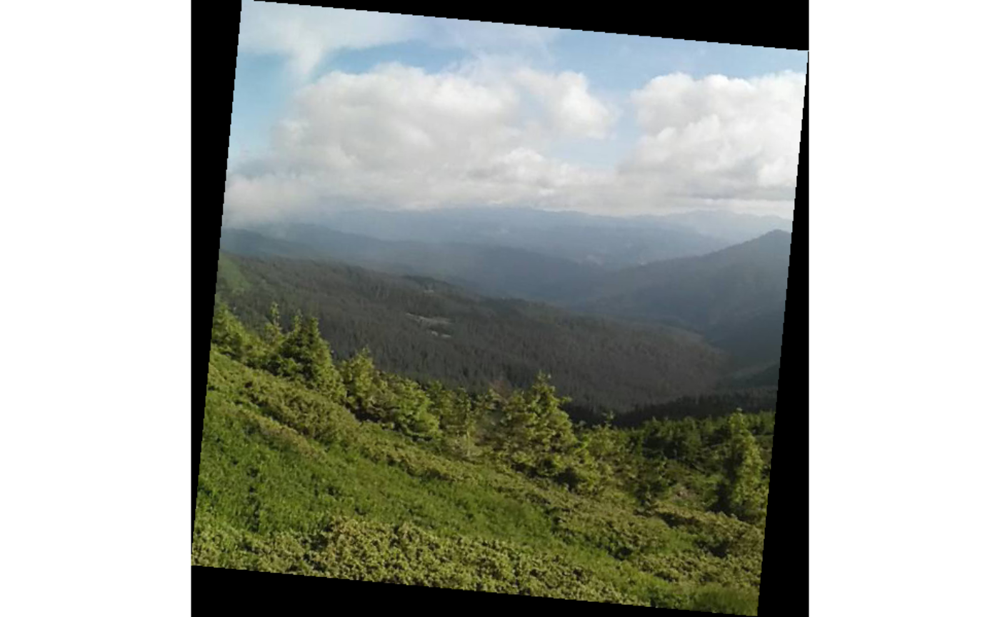

The getAffineTransform() and warpAffine() functions of the OpenImageR package is an RcppArmadillo re-implementation of existing Python Code and this vignette shows how these functions can be used from within R based on the author’s .ipynb file
## Loading required package: OpenImageR
path = system.file('tmp_images', 'landscape.jpg', package = "OpenImageR")
img = readImage(path)
print(dim(img))## [1] 600 600 3
Input Image
r = ncol(img)
c = nrow(img)
offset = 50
original_points = matrix(data = c(0, 0, r, 0, 0, c),
nrow = 3,
ncol = 2,
byrow = TRUE)
transformed_points = matrix(data = c(offset, 0, r, offset, 0, c-offset),
nrow = 3,
ncol = 2,
byrow = TRUE)
M_aff = getAffineTransform(original_points = original_points,
transformed_points = transformed_points)The following is the Affine transformation matrix,
print(M_aff)## [,1] [,2] [,3]
## [1,] 0.91666667 -0.08333333 50
## [2,] 0.08333333 0.91666667 0The Affine transformation matrix can be used as input in the warpAffine() function,
res_3d = warpAffine(img = img,
M = M_aff,
R = r,
C = c,
verbose = TRUE)## time to complete : 0.0988 secs
str(res_3d)## num [1:600, 1:600, 1:3] 0 0 0 0 0 0 0 0 0 0 ...The next image shows the output based on the input data and parameters,
imageShow(res_3d, clear_viewer = FALSE)

Output of Warp Affine function